Method Image.Layer()->mode()
- Method mode
objectstringmode)
string
array(string) available_modes()- Description
-
Set/get layer mode. Mode is one of these:
top layer 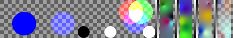 bottom layer 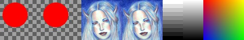 normal 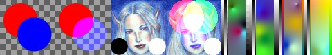 D=L applied with alpha: D=(L*aL+S*(1-aL)*aS) / (aL+(1-aL)*aS), aD=(aL+(1-aL)*aS) add 
D=L+S applied with alpha, aD=aS subtract 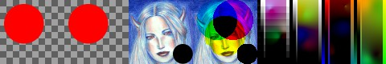 D=S-L applied with alpha, aD=aS multiply 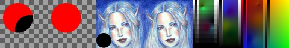 D=S*L applied with alpha, aD=aS divide 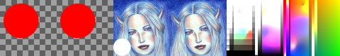 D=S/L applied with alpha, aD=aS negdivide 
D=1.0-S/L applied with alpha, aD=aS modulo 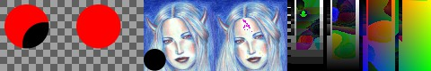 D=S%L applied with alpha, aD=aS invsubtract 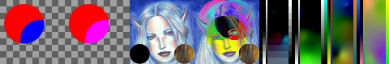 D=L-S applied with alpha, aD=aS invdivide 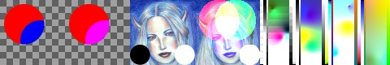 D=L/S applied with alpha, aD=aS invmodulo 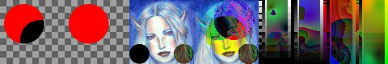 D=L%S applied with alpha, aD=aS imultiply 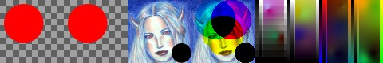 D=(1-L)*S applied with alpha, aD=aS idivide D=S/(1-L) applied with alpha, aD=aS invidivide 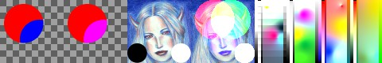 D=L/(1-S) applied with alpha, aD=aS difference 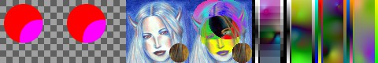 D=abs(L-S) applied with alpha, aD=aS max 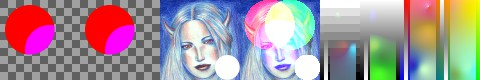 D=max(L,S) applied with alpha, aD=aS min 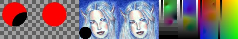 D=min(L,S) applied with alpha, aD=aS bitwise_and 
D=L&S applied with alpha, aD=aS bitwise_or 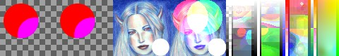 D=L|S applied with alpha, aD=aS bitwise_xor 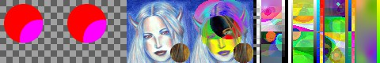 D=L^S applied with alpha, aD=aS replace 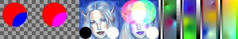 D=(L*aL+S*(1-aL)*aS) / (aL+(1-aL)*aS), aD=aS red 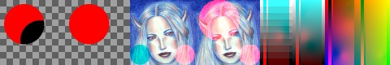 Dr=(Lr*aLr+Sr*(1-aLr)*aSr) / (aLr+(1-aLr)*aSr), Dgb=Sgb, aD=aS green 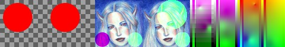 Dg=(Lg*aLg+Sg*(1-aLg)*aSg) / (aLg+(1-aLg)*aSg), Drb=Srb, aD=aS blue 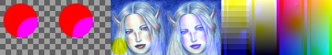 Db=(Lb*aLb+Sb*(1-aLb)*aSb) / (aLb+(1-aLb)*aSb), Drg=Srg, aD=aS hardlight 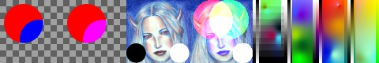 Like photoshop hardlight layer mode, aD=aS replace_hsv 
Dhsv=Lhsv apply with alpha, aD=aS hue 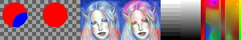 Dh=Lh apply with alpha, Dsv=Lsv, aD=aS saturation 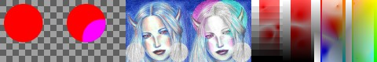 Ds=Ls apply with alpha, Dhv=Lhv, aD=aS value 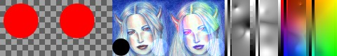 Dv=Lv apply with alpha, Dhs=Lhs, aD=aS color 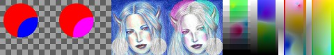 Dhs=Lhs apply with alpha, Dv=Lv, aD=aS value_mul 
Dv=Lv*Sv apply with alpha, Dhs=Lhs, aD=aS darken 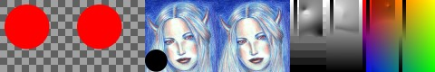 Dv=min(Lv,Sv) apply with alpha, Dhs=Lhs, aD=aS lighten 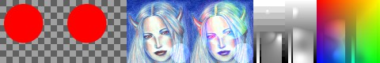 Dv=max(Lv,Sv) apply with alpha, Dhs=Lhs, aD=aS saturate 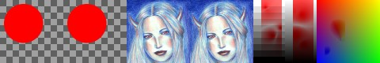 Ds=max(Ls,Ss) apply with alpha, Dhv=Lhv, aD=aS desaturate 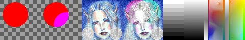 Ds=min(Ls,Ss) apply with alpha, Dhv=Lhv, aD=aS hls_replace Dhls=Lhls apply with alpha, aD=aS hls_hue 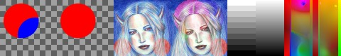 Dh=Lh apply with alpha, Dsv=Lsv, aD=aS hls_saturation 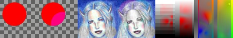 Ds=Ls apply with alpha, Dhv=Lhv, aD=aS hls_lightness 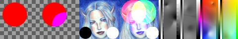 Dl=Ll apply with alpha, Dhs=Lhs, aD=aS hls_color 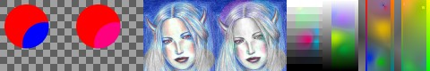 Dhs=Lhs apply with alpha, Dl=Ll, aD=aS hls_lightness_mul 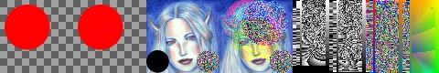 Dl=Ll*Sl apply with alpha, Dhs=Lhs, aD=aS hls_darken 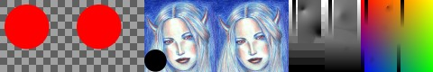 Dl=min(Ll,Sl) apply with alpha, Dhs=Lhs, aD=aS hls_lighten 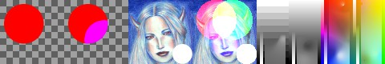 Dl=max(Ll,Sl) apply with alpha, Dhs=Lhs, aD=aS hls_saturate Ds=max(Ls,Ss) apply with alpha, Dhl=Lhl, aD=aS hls_desaturate 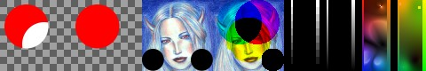 Ds=min(Ls,Ss) apply with alpha, Dhl=Lhl, aD=aS dissolve 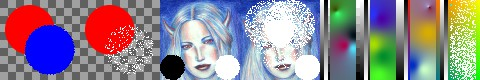 i=random 0 or 1, D=i?L:S, aD=i+aS behind 
D=(S*aS+L*(1-aS)*aL) / (aS+(1-aS)*aL), aD=(aS+(1-aS)*aL); simply swap S and L erase 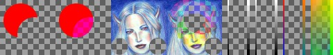 D=S, aD=aS*(1-aL) screen 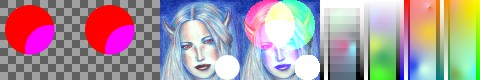 1-(1-S)*(1-L) applied with alpha, aD=aS overlay 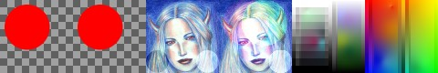 (1-(1-a)*(1-b)-a*b)*a+a*b applied with alpha, aD=aS burn_alpha 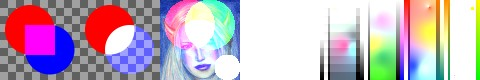 aD=aL+aS applied with alpha, D=L+S; experimental, may change or be removed equal 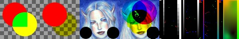 each channel D=max if L==S, 0 otherwise, apply with alpha not_equal 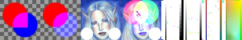 each channel D=max if L!=S, 0 otherwise, apply with alpha less 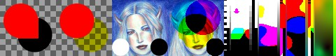 each channel D=max if L<S, 0 otherwise, apply with alpha more 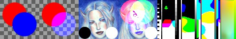 each channel D=max if L>S, 0 otherwise, apply with alpha less_or_equal 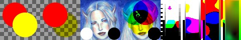 each channel D=max if L<=S, 0 otherwise, apply with alpha more_or_equal 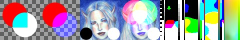 each channel D=max if L>=S, 0 otherwise, apply with alpha logic_equal 
logic: D=white and opaque if L==S, black and transparent otherwise logic_not_equal 
logic: D=white and opaque if any L!=S, black and transparent otherwise logic_strict_less logic: D=white and opaque if all L<S, black and transparent otherwise logic_strict_more 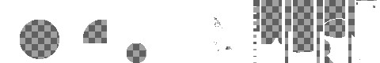 logic: D=white and opaque if all L>S, black and transparent otherwise logic_strict_less_equal logic: D=white and opaque if all L<=L, black and transparent otherwise logic_strict_more_equal logic: D=white and opaque if all L>=L, black and transparent otherwise available_modes() simply gives an array containing the names of these modes.
- Note
-
image and alpha channel must be of the same size, or canceled.